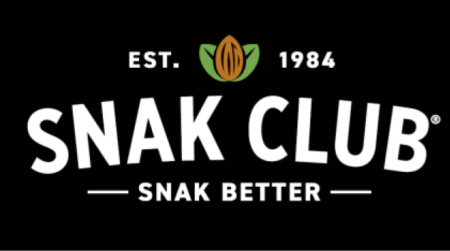
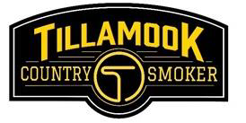
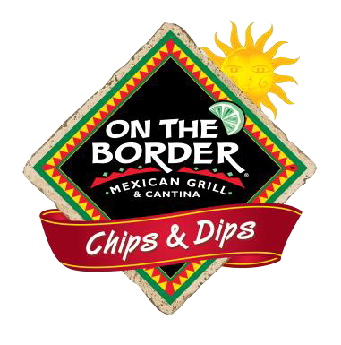

Based in El Segundo and Commerce, CA, Snak Club and New Century Snacks (collectively named “Century Snacks”) are leading manufacturers and distributors of snack nuts, and trail mixes. The companies’ products are distributed nationwide through grocery retailers, club and convenience stores on a branded and private label basis.

Based in Bay City, OR, Tillamook Country Smoker manufactures and distributes jerky, meat sticks and similar meat snack products. The company’s products are distributed primarily through the convenience and grocery retail channels.

Based in Dallas, TX, Truco is a leading developer and marketer of tortilla chips, salsa and queso under the On The Border® brand. The company’s products are sold nationally through grocery retailers, club and convenience stores.